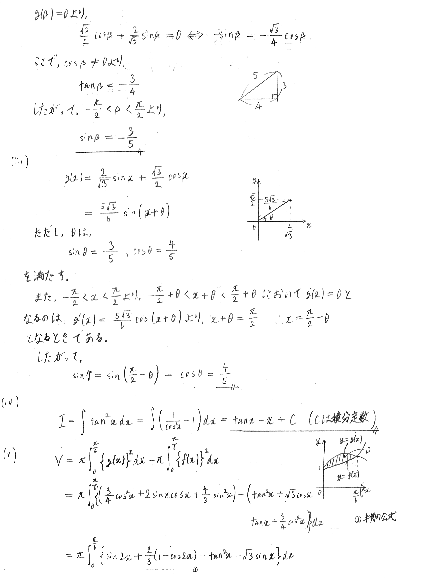
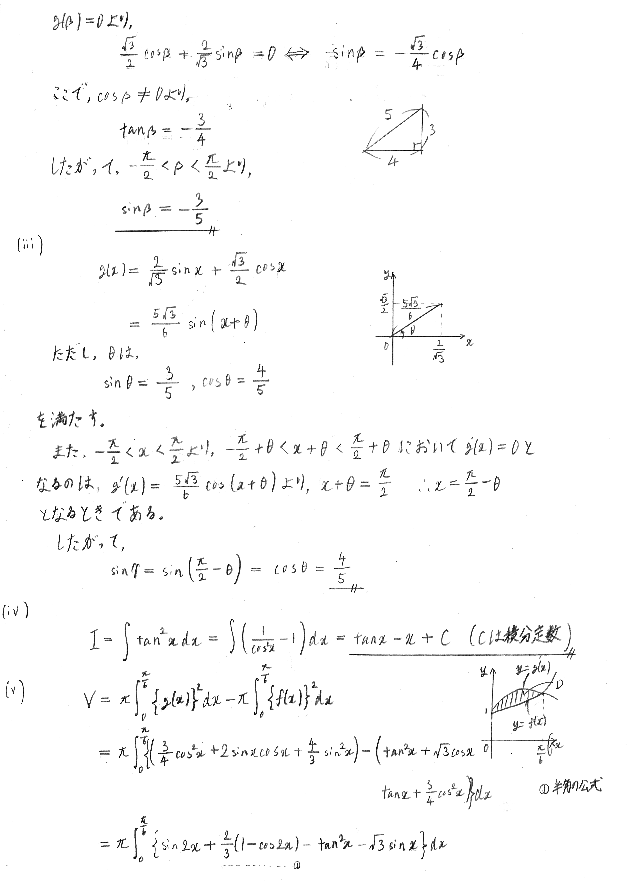

$\displaystyle -\frac{\pi}{2} \lt x \lt \frac{\pi}{2}$で定義された2つの関数 $$f(x) = \tan x + \frac{\sqrt{3}}{2} \cos x,\qquad g(x) = \frac{\sqrt{3}}{2} \cos x + \frac{2}{\sqrt{3}} \sin x$$ について，以下の問いに答えよ。
(配点 50)
$\displaystyle -\frac{\pi}{2} \lt x \lt \frac{\pi}{2}$で定義された2つの関数 $$f(x) = \tan x + \frac{\sqrt{3}}{2} \cos x,\qquad g(x) = \frac{\sqrt{3}}{2} \cos x + \frac{2}{\sqrt{3}} \sin x$$ について，以下の問いに答えよ。
(配点 50)
(i) 不等式$\; f(x) \leqq g(x) \;$をみたす$\; x \;$の範囲を求めよ。
(ii) 曲線$\; y = f(x)\; $と$\; x \;$軸の共有点の$x$座標を$\; \alpha \;$，曲線$\; y = g(x) \;$と$\; x \;$軸の共有点の$\; x \;$座標を$\; \beta \;$とするとき，$\; \sin \alpha, \sin \beta \;$の値を求めよ。
(iii) 関数$\; g(x) \;$が$\; x = \gamma \;$で極値をとるとする。$\; \sin \gamma \;$の値を求めよ。
(iv) 次の不定積分を求めよ。ただし，積分定数は省略してもよい。
$$ I = \int \tan^2 x dx$$
(v) 不等式$\displaystyle \; 0\leqq x \lt \frac{\pi}{2}\;$の表す領域において曲線$\; y = f(x)\;$と$\; y = g(x) \;$で囲まれた部分を$\;D\;$とするとき，$\; D\; $を$\; x\;$軸のまわりに1回転させてできる立体の体積$\;V\;$を求めよ。
 
